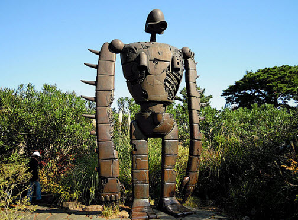

The first thing you might see at the Studio Ghibli Museum is a shy owl. Better click here so she can hide again. Things are a bit too scary right now.

To learn more about the Ghibli Museum click here.
White Red No, I like the Green, please.
The first thing you might see at the Studio Ghibli Museum is a shy owl. Better click here so she can hide again. Things are a bit too scary right now.
To learn more about the Ghibli Museum click here.
This robot is much more brave. She can take whatever you can dish out. click here to bring her forth! Huzzah!
Hachi likes to run around. He never stays in one place. click here to see him come and go.

You should come to Tokyo. It is a wonderful place. Click Here to make trave arrangements.